オシロお絵描き
やあ、やあ知ってる？聞いた事ある？オシロお絵描きのその噂。オシロお絵かき？お城？ 違うの、違うよ。本当の話。オシロスコープに絵を描いて、ニコニコ技術部で一位になっ て、YouTubeでロシア人に話題になって、日本、中国、台湾、香港、アメリカのニュース サイト、掲示板で紹介されて、逆輸入で日本の海外の反応記事にも取り上げられた、その オシロお絵描き。
オシロお絵描きは、その名の通り、オシロスコープに絵を描くものである。 Twitter、YouTube、ニコニコ動画に作品群が投稿されており、また、各国の各種ニュースサ イト、掲示板で紹介され様々な方面から高い評価を得ている。その一端をのぞいてみよう。
高い…評価を…… とにも、かくにも、オシロお絵描きは一部界隈で有名になったので、よければのぞいてい ってほしい。
https://twitter.com/i/events/1106519963710316544?lang=ja https://news.nicovideo.jp/watch/nw http://www.all-nationz.com/archives/1076135816.html https://reddit.app.link/eiKKEhWyc
これは、引退した物理部員によるオシロお絵描き計画(2018⁄6~)に関する寄稿である。
オシロに絵を描くお話
以下は表示デバイス作成担当の越智氏のお話である。
オシロスコープってな〜んだ？
オシロスコープとは、電気的な振動をスクリーンに表示する装置である。(ウィキペディアより)
通常、オシロスコープは横軸を時間軸、縦軸を電圧軸として、電気信号の波形を表示する。 たいていのオシロスコープにはチャンネルが２つある。 オシロスコープには主に、デジタルオシロスコープとアナログオシロスコープが存在する。 この二つの区別は、実は曖昧なのだが、ここではブラウン管オシロスコープをアナログオ シロスコープとして説明する。
まず電子銃から電子ビームが出る。この後、電子は偏向板とよばれる２組の金属板の間を 通る。上下に配置された偏向板にはチャンネル１または２から電気信号が入力されており、 垂直に電界を与えている。こ の と き 、電 界 が 正 だ と 電 子 ビ ー ム は 上 に 、負 だ と 下 に 曲 が る 。 左右に配置された偏向板にはノコギリ波が入力されており、これにより電子ビームは周期 的に左から右に曲がっていく。これを掃引という。電子ビームが蛍光板にあたると光る。 この点を輝点という。この輝点の軌跡が波形として表示されるのである。
図解オシロスコープの仕組み→ 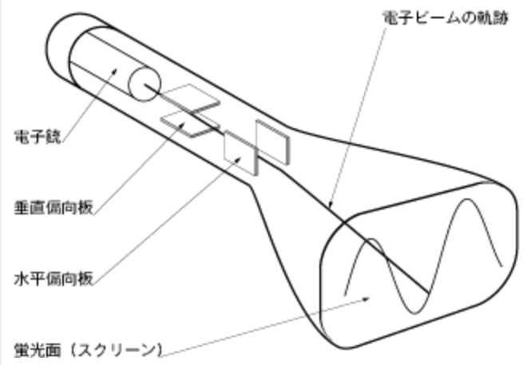
物理部のオシロスコープ
KENWOOD製 帯域20MHz
型番：CS- 4025
※上にのっている物は気にしないで下さい
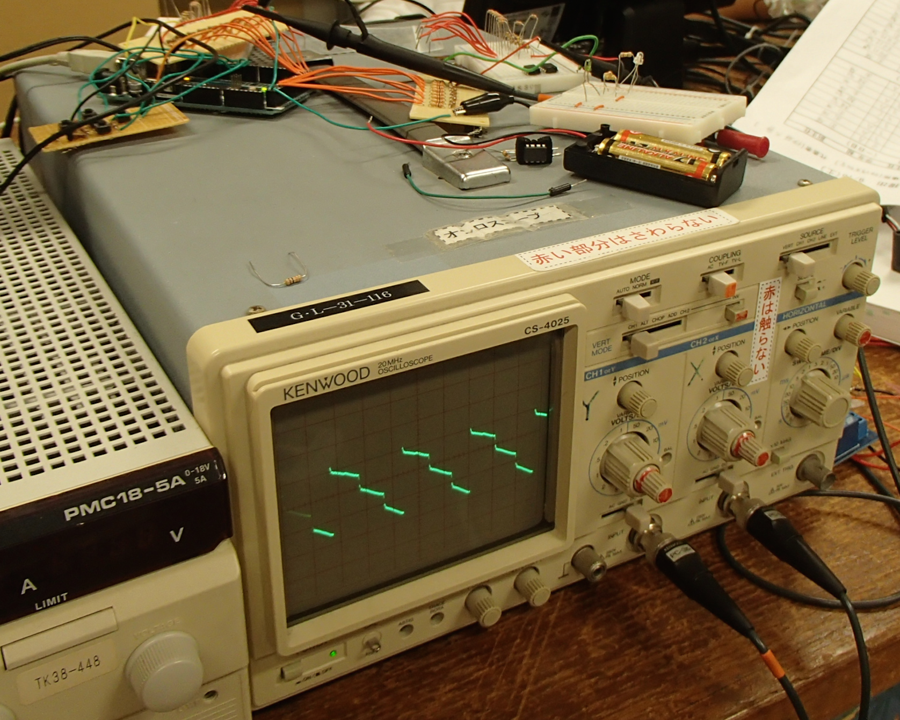
オシロに絵を描く簡単な仕組み
実は、たいていのオシロスコープにはもう一つモードが存在する。それがX-Yモードである。このX-Yモードは、チャンネル１の電圧をY軸に、チャンネル２の電圧をX軸に表示 するものである。本来はリサージュ図形などを使う事で２つの電気信号の位相関係などを 測定するものなのだが、ここではリサージュ図形は関係ない。
いま、X-Yモードでチャンネル１にV1、チャンネル２にV2という電圧が入力されたとする。 すると、輝点はX軸、Y軸のそれぞれが入力された電圧を示す点になる。 このように、オシロスコープ上の任意の座標に点を打ちたいとき、X-Yモードでチャンネル １、チャンネル２にそれぞれある電圧を加える事で表示する事ができる。
今、座標(0,0)を画面の左下に、座標(255,255)を右上に設定する。
例えば座標(128,64)に点を打ちたいとき、チャンネル 1 には、$3.3\times\frac{64}{256}=0.825V$ チャンネル２には$3.3\times\frac{128}{256}=1.65V$が入力されれば良い。（下図）
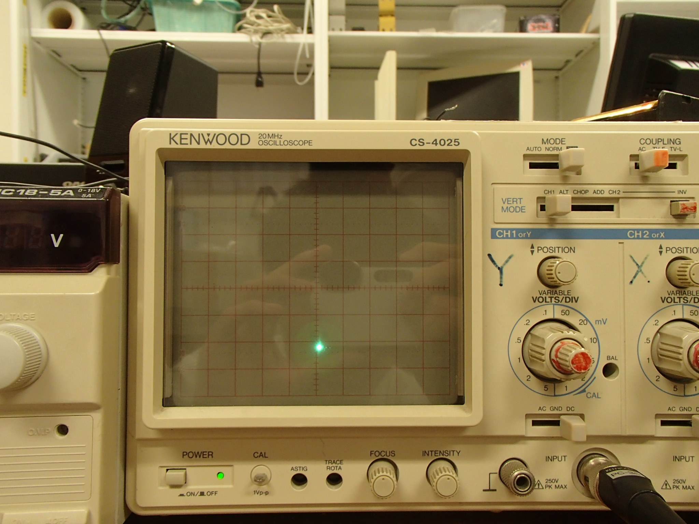
（オシロスコープに表示された点。オシロスコープの画面そのものが縦：横が ４：５になっているため、画像は横に1.25倍引き延ばされる）
ここで、任意の電圧を出力するために必要になるのが、マイコンである。 マイコンとは、ここではプログラムによって入出力ピンの動作を制御したりコンピュータ ーと通信したりする事のできるものを指している。 我々はマイコンにArduino、Raspberry Piを用いた。 しかし、大抵のマイコンは実は任意の電圧を直接出す事はできないのだ。Arduinoや Raspberry Piは基本的に5Vや3.3Vなどしか出せない。 ここで、いかにして任意の電圧を出力するかが、好みの分かれるところである。（後述）
オシロお絵描きの系譜
僕がオシロに絵を描く芸当を初めて知ったのは、ニコニコ技術部でのことだった。それは 初音ミクをオシロスコープに表示するものだった。オシロお絵描きは決して六甲学院物理 部の専売特許ではない。むしろ、もう何百番煎じかというほどだ。しかし、僕はそれでも、 我々のオシロお絵描きはその技術レベルにおいて他を凌駕していることを主張したい。
一口にオシロお絵描きといっても、複数種類ある。 大別して、ラスタースキャンとベクタースキャンである。
ラスタースキャンというのは、オシロスコープのチャ ンネル１、２にノコギリ波を入力し、これを調節して 画面を輝点で埋め尽くす。そして輝度変調信号入力端 子に輝度変調信号を入力して、画面の輝点の明るさを 調節し絵を表現する。要するにテレビと同じである。
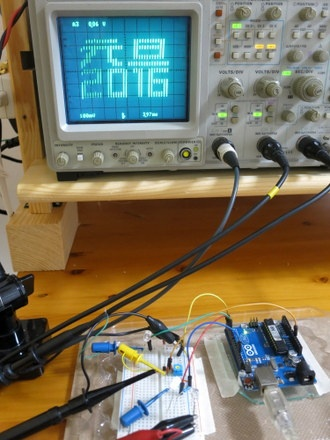
一方、ベクタースキャンは、チャンネル１、２に入力する電圧で直接輝点の位置を移動さ せて絵を描くものである。ベクタースキャンの中にも主に３種類ある。それがPWM方式、 音声信号方式、D/Aコンバーター方式である。 PWM（Pulse Width Modulation）とは、日本語 で「パルス幅変調」といい、PWM制御はオン とオフを繰り返しきりかえることで出力され る電力を制御するというものである。
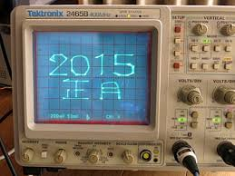
音声信号方式は、オシロスコープに音声信号を入力 して絵を描くものであり、中には音楽を奏でつつ絵 を描いてしまうツワモノもいる。
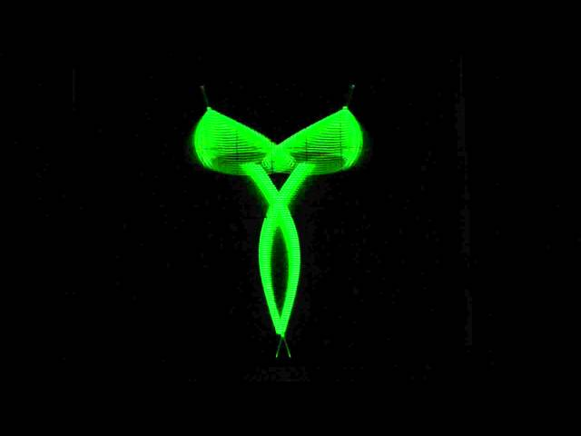
さて、我らがD/Aコンバーター方式は、名前の通りD/A コンバーターを使って、電圧を調節して、これをオシロス コープに入力するものである。我々はD/Aコンバーター には、 ラダー抵抗式を採用した。（下回路図）今回は 入力ピンを８つずつ用意し、それぞれ 8bitのD/Aコンバ ーターをつくった。この D/Aコンバーターでは、入 力ピンそれぞれが２進数の桁に対応しており、電圧が 入力されたか否かの２進数の値を１０進数の値へ変 換して出力する。具体的には、この回路で 0 Vから5V まで 256 段階で出力できる。 D/A コンバーター方式による絵はいわゆるドット絵である。このオシロお絵描きは256*256のドット絵を表示している。
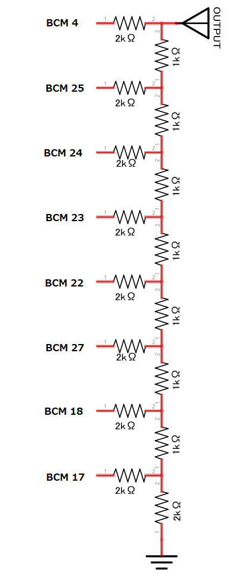
Arduinoオシロお絵描き
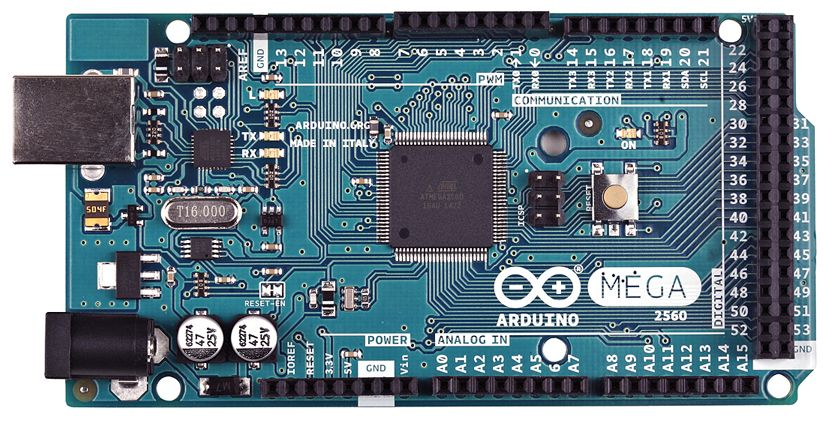 これは、Arduinoのデジタル出力ピンにD/Aコンバーターをつなげて、オシロに絵を描くも のである。ピンの出力は、入力電圧を二進数に変換して、各桁に対応するピンから電圧を 出力する。
ここで、大きな問題となるのは、Arduinoの計算スピードの遅さである。 そこで、僕がArduinoを高速化する高等テクニックをお見せしよう。 まずピンをHIGH（電圧を出力する）、LOW（OFFにする）にする方法を変えてみた。 元は次のような書き方である。（pin8をHIGH、LOWにするコマンド）
digitalWrite(8, HIGH);
digitalWrite(8, LOW);
しかし、これは処理に４４サイクル必要になる。そこで次のような書き方をする事で 処理を３サイクルにまで減らす事ができる。（Arduino Megaの場合）
PORTB = B11000000;
これは、PORTBの０番ピン、１番 ピンをHIGHに、２〜７番ピンを LOWにするという意味である。さら に、digitalWriteでは、同時に１つ のピンしか作動させられないのに対 し、この書き方だと同じポートに属 する 8 つのピンは同時に動かす事ができるのでその分も高速化につながる。 ところで、このB11000000は、２進数で 192 を意味している。逆に、
PORTB = 192;
と書けば上と同じ意味になるのである。 これによる高速化はかなりのものである。ピンの出力だけで単純計算で約 120 倍である。 さらに、十進数から二進数に変換する計算にもかなり時間がかかるが、この方式ならその 必要はない つまり、D/Aコンバーターが8bit以下の時、この書き方を使えばわざわざ２進数に変換 しなくても１０進数の数字をそのまま入力すればいいのだ。 よって座標(x,y)に点を打つだけの場合は次のように書けばいい。
PORTA = x;
PORTL = y;
このオシロお絵描きはX軸側がpin22~29、Y軸側がpin49~42に接続されているが、これ はArduino MegaのPORTAがpin22~29、PORTLがpin49~42を指しているからである。
表示する点はあらかじめコンピューターで計算？しテキストファイル出力して、 Arduinoの配列に格納している。（後述） また、Arduinoのメモリ（SRAM）は容量が小さいため、フラッシュメモリに配列 を格納している。
しかしこのオシロお絵描きはArduinoのフラッシュメモリの容量から静止画が関の山だっ た。そこで我々はさらなる発展のためArduinoに見切りを付けた。
| 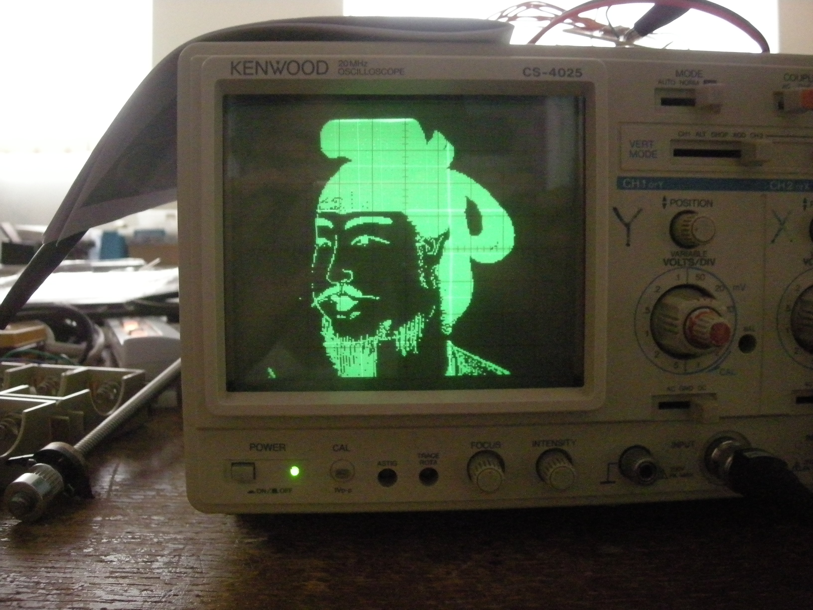 | 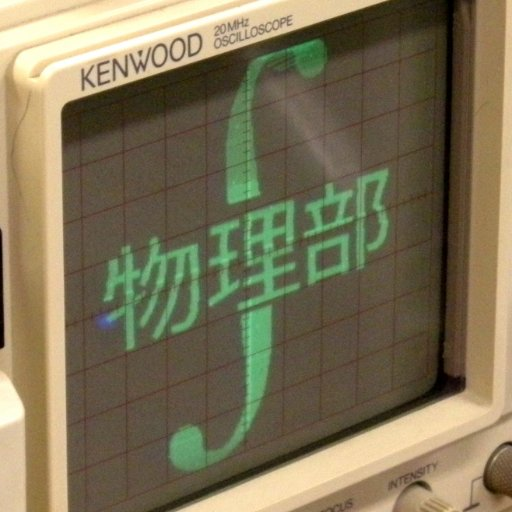 |
オシロお絵描き with Raspberry Pi
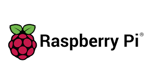
Raspberry Pi（以下ラズパイ）は素晴らしいコンピューターだ。 名刺サイズ大の小さな1枚の基板に、ARMベースのCPUや、パソコンを構成するハードウェアの大半が詰め込まれていて、 HDMI／USB／LAN等のインターフェイスを利用することが可能だ。
これにストレージの役割を果たすSDメモリーカード、電源、デスクトップ環境を備えるOS、ディス プレイ、キーボード、マウス等を用意して組み立てれば、MacやWindowsパソコンと似た UIで使用することができる。価格は高くても 6000 円程度である。 そして、何と言ってもラズパイにはIOピンが備えられており、電子工作のお供としても最適だ。(ただしArduinoの次に) オシロお絵描き with Raspberry Piでは、このIOピンにD/Aコンバーターを接続し、オシロ への電圧入力を制御している。 ラズパイにおけるピン制御には、言語としてはC言語、ライブラリーにWiringPiを用いて いる。WiringPiはラズパイ上において、C言語でArduinoライクな書き方でピン制御ができ る。
ラズパイではArduinoの時のような高等テクニック？は使えないが、クロックが十分早いの で、問題ない。一応、ビット演算子を用いて高速化を図っている。また、マルチスレッド
プログラムを採用し、表示部分と表示データ生成部分を別のコアに分けることで、効率化 を図った。 さらに表示にインターレース（飛び越し走査）を採用しちらつきを抑えている。 また、これはArduinoオシロお絵描きにも共通するが、表示方法に特殊な方法を使っている。 物理部のオシロお絵描きは、表示する点をラスタースキャンのように上から順にスキャン していって、表示しない点は、高速で飛ばすことで、見えないようにしている。この方式は 『可変式ラスタースキャン』と呼ばれている。一応この方式は分類としてはベクタースキ ャンに分類されるだろうが、ベクタースキャンを無理やり高速化してラスタースキャンに 寄せたものである。この方式のメリットは、ベクタースキャンでありながら、中身の詰ま った図形を表示できる点である。
また、事前に配列に格納するのではなく、あらかじめラズパイ上に用意したテキストファ イルを参照しながら表示する。このファイルを我々はosdファイルと呼んでいる。 オシロお絵描き with Raspberry Piの最大の特徴は、その拡張性である。静止画はもちろん、 動画表示も難なくこなし、各種ゲームをプレイすることも、X window systemと組み合わせ ることで、画面上に描いた図形をオシロスコープ上に表示することも可能である。 詳しくは、六甲学院物理部のGitHubを見てほしい。詳しい説明とソースコードが載ってい る。 https://github.com/RokkoPhysicsClub/Oscillo-Drawing
- オシロテトリス

- オシロに動画表示

- オシロとX11の合わせ技

データ生成のお話
以下はデータ生成担当の伊藤氏のお話である。
こんにちは。データ生成担当のitoHOだ。itoHOと書いて「いとほ」と読む。私は動画や静 止画からのosdファイルへの変換を担当している。osdファイルとはオシロスコープに表示 させたい画像をテキストに変換したものだ。もしかすると他のソフトで .osd を使うこ とがあるかもしれないが、全くの別物なので注意をしてほしい。
オシロスコープに任意の点を高速で描画できるようになったなら、あとは遊ぶ準備を整 えるだけだ。 せっかくなので、おもしろいものを表示したいと考える。面白いもの……たとえば、アニ メを表示してみよう。 残念ながらオシロスコープ表示用のプログラムには一般的な動画ファイルを直接読み取 って表示する機能はない。また、オシロスコープはフルカラーな表示もできない。よって、 アニメを表示するためにはアニメをオシロスコープ表示用の形に変換する必要がある。
動画から静止画を切り出す
動画は、静止画（写真）の集まりだ。パラ パラ漫画は少しずつ違う絵をたくさん用意 してすばやく入れ替えることで動きを表現 している。動画も原理は同じで、静止画を高 速で切り替えて動いているように見せてい る。 動画から静止画を切り出すのは、動画編集ソ フトでもできるが、私はFFmpegを使った。 FFmpegとは簡単に言えば動画や音声を扱う無料のソフトウェアだ。今回はこれを使って動 画から画像を取り出した。 連番で画像を切り出すときのコマンドは以下のとおりである。 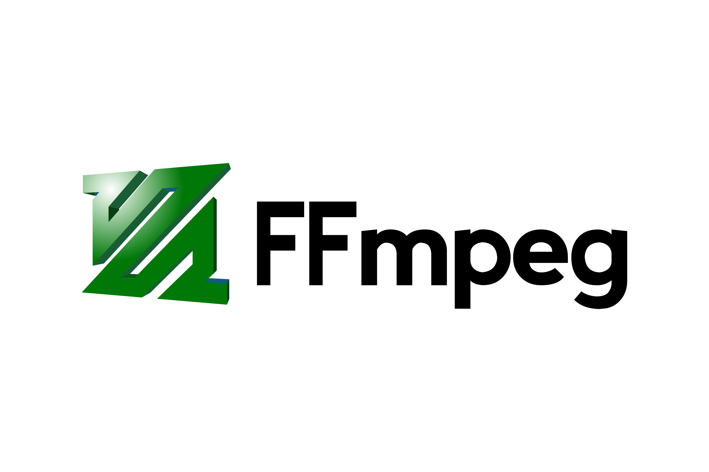
ffmpeg -i "ビデオ.mp4" -s 256x256 -r 24 images/%05d.png
このコマンドは、ビデオ.mp4を読み込んで 1 秒間に 24 枚の画像をimagesフォルダの下 に 5 桁ゼロ埋め連番のファイル名で解像度 2 56x256で保存する。 このようにして画像を用意したら、次の段階に移る。
静止画を2値化する
用意した画像たちはまだ色がついている。オシロスコープに表示で きるのは緑か黒だけだ。なので画像を 2 色で表現しなければならな い。 2 色に分けるというので 2 値化と呼ばれている。 2 値化するために、OpenCVを使った。 OpenCVとは画像などを扱う無償のソフトウェアだ。このソフトは かなり有名で、例えば顔認識などの高度な機能も使える。 私はこのOpenCVを利用して 2 値化することにした。 言語はPythonを使用した。Python以外にもC ,C++, Java ,C# などほとんどの言語に対応している。Pythonは遅いと言われるが、OpenCVを呼び出すと きにちょっと使う程度なのであまり速度に影響がない。メリットとしては、可読性が上が る。書きやすいといった点が挙げられる。 現在ウェブでの変換方式は 2 種類選べるようになっている。「つぶつぶ」と「アニメ調」だ。 これらの名前は変換結果の見た目に由来している。
- 「つぶつぶ」モード 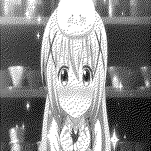
- 「アニメ調」モード
「つぶつぶ」は、画像をグレースケール（白黒）化したものを、乱数をもとに色の濃いと ころにぎっしりと黒点を配置し、色の薄い場所はまばらに配置することで 2 値化している。 疑似的に灰色の表現が可能になる。
「アニメ調」は、画像からエッジを抽出して、いわゆる線画にできる。大津の 2 値化とい うアルゴリズムで閾値を決め、その閾値以上のピクセルを黒にする。ちなみに大津とはこ のアルゴリズムの開発者名だ。
また、画像上に領域ごとに異なる輝度になっているような画像全体に大津の二値化を使う と部分的につぶれてしまうことがあるので、画像を 5 × 5 の領域に分割し、それぞれに大 津の二値化を適用することによってきれいな線画を得ることができる。 ちなみに、web 上ではオプションでそれぞれの閾値から減算する値を入力することで仕上 がりを微調整することができる。 「つぶつぶ」「アニメ調」この二つの方法にはそれぞれ長所と短所がある。
| 長所 | 短所 | |
|---|---|---|
| つぶつぶ | 灰色の表現が可能。輪郭以外も表現できる。調整不要 | オシロスコープに表示すると非常に見ずらい場合がある。osdファルのサイズが増える。ラスタースキャン(TVと同じ)のように見える。 |
| アニメ調 | オシロスコープ上で見やすい。osdファイルのサイズが減る。ベクタースキャンらしく見える | 輪郭以外が表示されない。閾値を調節する手間が必要。動画によってはきれいに線画にできない。処理に時間がかかる。 |
画像をテキストファイルに変換する
これまでに作った2値化された画像ファイルをCプログラムで利用できる形式に変換する。 Arduinoを使った初代オシロお絵描きでは、黒点の総数とx座標を入れた配列、y座標を入 れた配列で構成されていた。
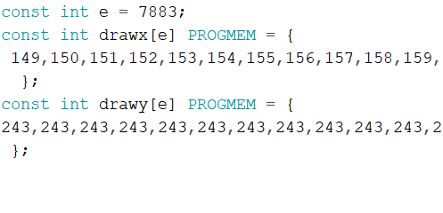
Arduinoはマイコンであり、あまり性能が高くないので、表示点数が多い画像は表示できな かった。 現在はコンピュータであるラズベリーパイを使っているので表示点数の多い画像でも問題 ない。表示点数の多い画像が数千枚あっても痛くもか痒くもない。 osdファイルのフォーマットは
画像枚数
一枚目の表示点数
始点x座標 終点x座標 y座標
始点x座標 終点x座標 y座標
まだまだ続く...
となっており、たとえば「たべるんごのうた」を変換したosdファイルは
709 <=画像の枚数
1830 <= 1 枚めの画像の要素数
128 129
128 130
128 132
128 134
134 134
のようになっている（先頭のみ抜粋）。1秒間に20枚の画像を表示する設定なので表示時間 は 709割る20で35.45秒である。
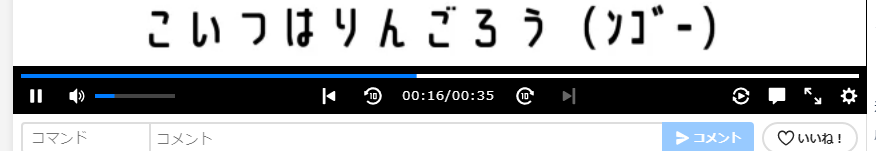
元動画と同じ秒数になっていることが確認できた。 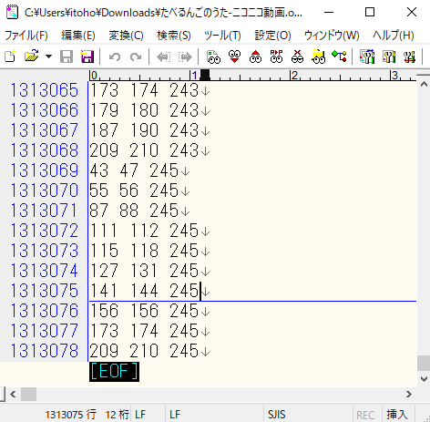 たべるんごのうた-ニコニコ動画.osd 行数は 1313078 行 ファイルサイズは 14 MB 再生時間 3 5.45 秒 スマホの写真 2 枚程度の大きさだ。 こいつ（りんごろう）の影響で久々にニコニコ動画が にぎわったのはうれしい。
画像からの変換はPythonを使用した。のちにCでも実装したが、PHPから実行ファイルを 実行させるのが難しかったので現在もPythonを使用している。
雑談
初バイトの給料でオシロスコープを買った。いろいろ試した結果学校で使っていたオシロ スコープはZ軸(輝度調節端子)が壊れていたことが分かった。私のオシロスコープは壊れて いなかったので暇になったら濃淡のある映像を表示してみる予定だ。 ご注文はうさぎですか？の3期が2020年10月からBS11チャンネルで始まるのでぜひ見てほしい。できるなら円盤も買って応援してほしい。
以上
感想
越智
オシロの絵を描き始めたのは、ほんの息抜きだった。当時、テルミンの開発に疲れていた 僕は、何か別のことをやりたいだけで、ニコニコ技術部に影響されて、オシロに絵を描い た。それがここまで発展するとは当時考えてもいなかった。今思い返しても、半分信じら れない。オシロお絵かきはニュースにまでなった。素晴らしいことだ。 そして、オシロお絵かきはニコニコ技術部でも度々一位に輝いている。いつか、オシロお 絵かきを見て、かつての僕のように何かインスピレーションを受ける人が出てきたら嬉し いと思う。 最後に、度々の無理にも付き合って、共にオシロお絵かきの開発にたずさわってくれた、 伊藤先輩、初期のデータ生成において重要な働きをしてくれた出原くん、そして多大な発 想の宝庫であるニコニコ技術部の皆さんに敬意を評したい。
伊藤
私が入部したころは 10 人程度だった部が今や 40 人程度まで巨大化した。背景には最近IT 分野が注目されていることがあると思う。今回のプロジェクトでは「最先端のIT」を扱っ たわけではない。だが、最先端のITをするにも低層(ハードウェア)のことを理解しておい たほうがいいと聞く。マシンスペックが上がった現在、普通の人は高速化を気にする必要 はなくなってきた(スパコンを使った研究や組み込み機器、ゲーム開発を除く)。そ ん な 中 、 高速化を体感できるオシロお絵描きは面白かったし、みんな(?)の憧れのニコニコ技術部の ランキング 1 位になったことは夢が叶ったような気分だ。 私の学年には、物理部員が私以外にいなかったので共同制作できたのは良い経験になっ たと思う。また 1 年前くらいにはプログラムが苦手でチャレンジする気もないと言ってい た越智後輩が、今ではCを使ってGUIゲームを作るほどに成長したのは嬉しいことだ。あ と、動画を編集してニコニコ動画、YouTube, Twitterにアップロードし、SNSでの広報活動にも余念がない出原後輩に感謝する。
最後に、
PV：https://www.youtube.com/watch?v=64PLft4-smU
オシロお絵描きよ、永遠なれ！
Tweet #六甲学院物理部2020